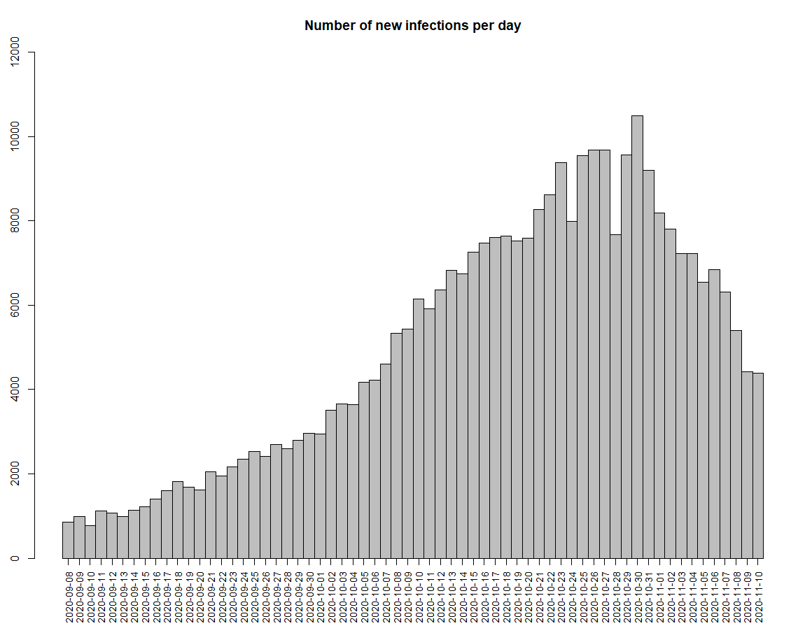
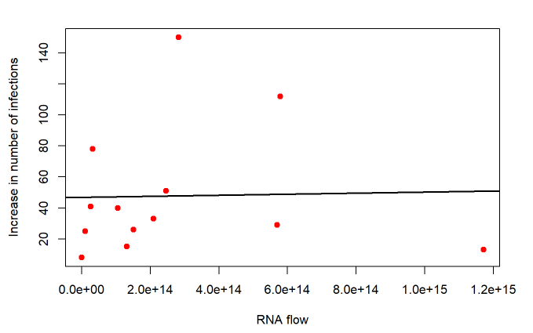
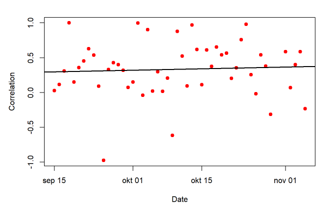

In December 2019, a virus known as SARS-Cov-2 (COVID-19) initiated in Wuhan, China. This variant of the SARS coronavirus, which shocked the world in 2003, caused a worldwide pandemic with many consequences. However, this virus is more dangerous since 20 to 40% of the patients show no symptoms, contributing to the silent spread of the virus (Vallejo et al., 2019).
Although patients do not always show symptoms of the virus, they do leave RNA particles of the virus in their faeces as shown by for example Pan et al. (2020). The virus can sustain itself for a long period of itself within the feaces, in some cases even one or more months after the respective patient has tested negative for RNA particles in their feaces (Vallejo et al., 2019). Therefore, the amount of RNA particles could be an indicator of the true number of COVID-19 patients within a country or municipality.
Graph 1 shows the number of infections per day:
Now that the RNA flow has been weighted, we want to inspect how the RNA flow is related to the increase in the number of infections. More specifically, we want to investigate this on the level of the security regions. To achieve this, the current functions for calculating the RNA flow and increase in number of infections per day will be altered so that these values are reported for each security region per day. Subsequently, the RNA flow from one day will be taken and the increase in the number of infections from 7 days later. The reason for this is that there is generally a 7 day time lag between getting COVID (showing up in the sewage water) and getting a positive test. A scatterplot with the aforementioned data should provide a first impression of how they are related to each other. Since not every security region has data about the RNA flow on the first day, and data about the increase in the number of infections 7 days later, only security regions that have data for both days are selected. Subsequently, the correlation for those data will be calculated.
In the final step of investigating the relationship between the RNA flow and the increase in the number of infections, the analysis conducted in the previous part is extended to the period of September till November. For each available combination of days (i.e. available combination of one date and the date 7 days later), the correlation between the RNA flow on the first day and the increase in infections 7 days later will be recorded. Finally, all the correlations will be plotted over the period in a scatterplot.
Figure ?? shows the correlation between the RNA flow on the 8th of September and the increase in the number of infections on the 15th of september. As can been seen from the scatterplot, these data do not seem to have a strong relationship with each other. Additionally, the correlation associated with this scatterplot is 0.027 which shows that these data almost show no relationship between each other. This strikes us as very interesting, since one would expect a relationship between the rna flow and the increase in the number of infections. Therefore, the analysis conducted in this step has been extended to the period of September till November.
To see the full extent of the relationship between the RNA flow and the increase in the number of infections, correlations between the two variables have been recorded for the full period of September till November. These correlations are subsequently plotted in a scatterplot and the mean correlation is calculated. The scatterplot can been seen below.
The scatterplot shows that the correlations fluctuate over the period, which seems very interesting. If the correlations would have formed a straight horizontal line, then the estimation of the true number of infections in the Netherlands would have been easy since the relationship between the RNA flow and the increase in infections would have been the same every day. The mean correlation associated with this scatterplot is 0.33 which is a relatively good correlation. This means that as the pandemic progresses, the relationship between the RNA flow and the increase in the number of infections becomes stronger. This would hopefully make it easier to estimate the true number of infections in the Netherlands.